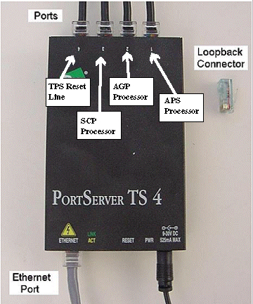
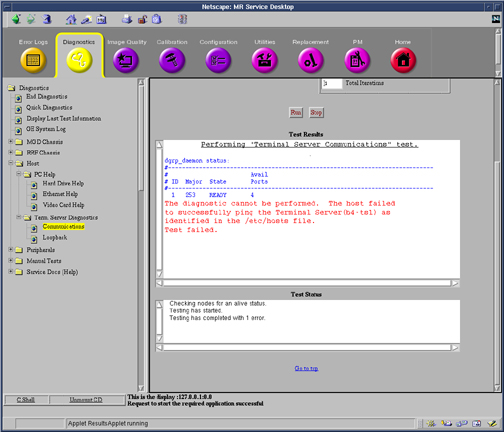
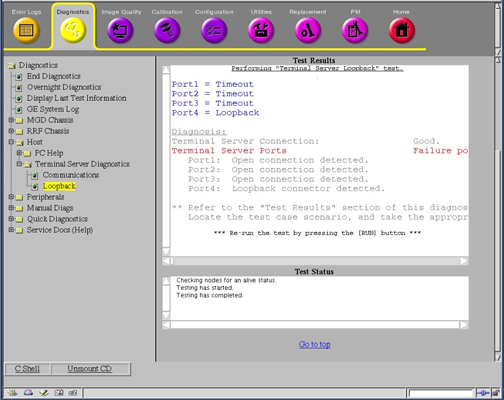

Operating Documentation
Direction 5133330-3, Rev# 14
Signa EXCITE HD 3.0T Service Methods
Module Version 1.0, Version Date 4/26/07
Operating Documentation |
The purpose of the Terminal Server Communications Diagnostic is to verify proper communication between the Term Server and related components.
Working PC LINUX Host Computer.
Working Network Hub.
Working Terminal Server.
All Required Cabling Completed. See Section 4.
Host PC Software Running.
Terminal Server Software
Configuration files
Processes
Terminal server hardware communications to the Terminal Server
The Term Server is located in the Systems cabinet, above the RRF Chassis, and can be accessed from the rear of the cabinet for all Forward Production HDx systems. The Term Server can be located on top of the MGD chassis in the Systems cabinet for upgraded systems. Refer to Illustration 1 for a picture of the Term Server.
Illustration 1: TERM Server Connections

Component Description
Ethernet Port - connection to the PC LINUX Host via the network hub.
Ports - connections to the following as shown/labeled (from left to right).
(4) TPS Reset Line
(3) SCP Processor
(2) AGP Processor
(1) APS Processor
Loopback Connector - Used during testing to verify Ports 1-4 are working properly.
Check the digi-daemon to ensure it is configured properly.
Ensure the Terminal Server is ready.
Ensure there are the correct number of Ports - 4.
Look up the Terminal Server IP Addr in the local /etc/hosts file .
Type cd /etc.
Type more hosts.
The Term Server IP address will have the host name followed by –ts1. Example is Bay14a-ts1.
"ping" the Terminal Server in order to verify the communications to the device are okay.
Type ping 10.0.1.7xx.xx.xx (where xx.xx.xx is the Term Server’s IP address obtained in the previous step)
Refer to Illustration 2.
Illustration 2: Starting Term Server Communcations

On the Common Service Desktop, go the [Diagnostics] Tab and then select [Host], [Term Server Diagnostics] and last, [Communications].
The communications test verifies communication from Host PC to Input of Term Server.
The Loopback Test will verify communication to the Term Server outputs. To run this test, remove the 4 outputs from Term Server to MGD boards. Place the Loopback Connector on one of the Term Server Outputs. Then Select “Loopback” and “Run” the test. The diagnostic will execute and should identify which port had the terminator, and which ports were open. Complete the diagnostic for all 4 ports. See Illustration 3 for typical output. In this example the terminator was on Port 4. If a port is not detected, the Term Server should be replaced.
Illustration 3:

Verify all cables have been re-connected, and perform head or body scan.